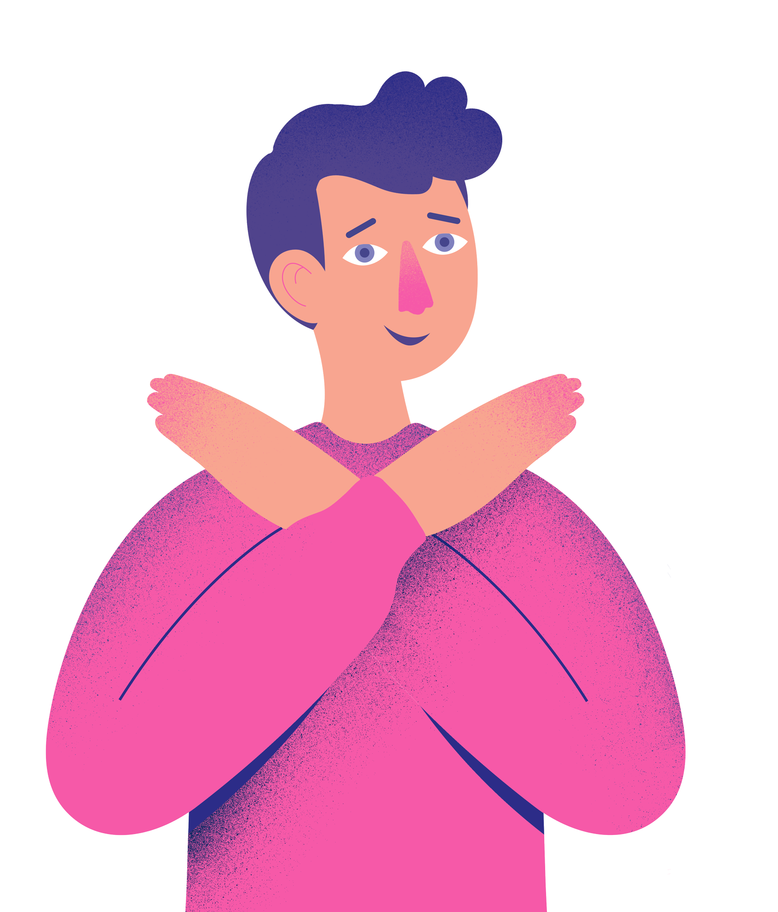

Komunikace

Jak mluvit s dětmi o rozvodu
Praktické tipy, jak dětem sdělit, co se děje, a jak jim pomoci situaci zpracovat bez zbytečných traumat.
Číst článek →Rozvod je náročná životní situace, ale nemusí být katastrofa. Pomůžeme vám projít tímto obdobím tak, aby vaše děti zůstaly v bezpečí a klidu.

Praktické tipy, jak dětem sdělit, co se děje, a jak jim pomoci situaci zpracovat bez zbytečných traumat.
Číst článek →
Co je OSPOD, kdy zasahuje a co od něj očekávat. Jasně, přehledně a bez zbytečného strachu.
Číst článek →
Tipy na komunikaci a nastavení pravidel i v případě, že vztah s bývalým partnerem není ideální.
Číst článek →
Jak střídavka funguje, pro koho je vhodná a jak ji nastavit tak, aby fungovala pro všechny strany.
Číst článek →Komplexní průvodce pro rodiče, kteří chtějí projít rozvodem tak, aby jejich děti zůstaly v bezpečí. Video lekce, pracovní listy a podpora odborníků na jednom místě.

"Kurz mi pomohl pochopit, co moje děti prožívají. Díky tomu jsem dokázala lépe reagovat na jejich potřeby v tom nejtěžším období."
"Konečně jsem našel místo, kde nikdo nestraší a nemoralizuje. Praktické rady, které jdou hned použít."
"Oceňuji klidný tón a věcný přístup. V situaci, kdy člověk panikař , je to přesně to, co potřebuje."
Projděte si náš online kurz nebo nás kontaktujte s jakýmkoli dotazem.